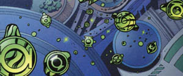

 Created by the Guardians of the Universe, the power rings are considered the most powerful weapons in the universe becuase they are only limited by the imagination and willpower of the user. The stronger the user's willpower is, the stronger and more effective the ring becomes.
The power rings allow the user to do almost anything in their imagination and is not limited to the powers below:
At first, power rings need to be recharged at least every 24 hours by each Green Lantern's power battery in the shape of a lantern. Each personal lantern is directly linked the the central power battery on Oa. Alan Scott's power ring was ineffective to wood. For a long time, the power rings were ineffective against anything the color yellow but Green Lanterns have found ways around this limitation by affecting a yellow object indirectly.